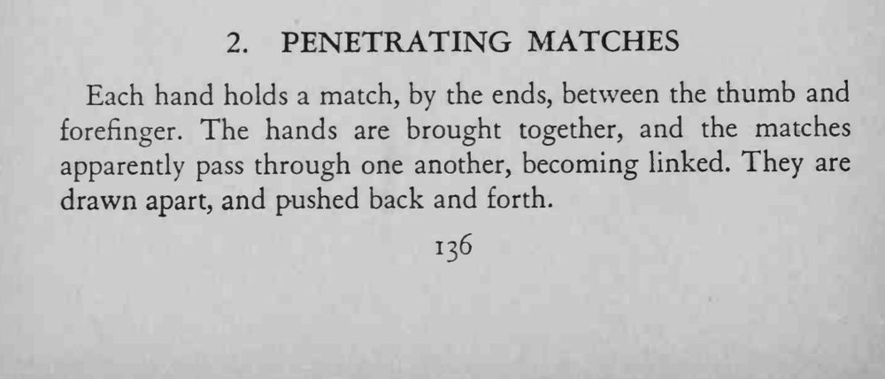
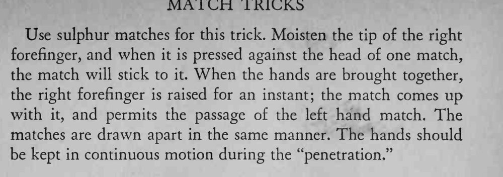

两手各捏一根火柴，两手一合，两根火柴竟然互相穿过、扣在一起，拉开再推回都分不开。
火柴必须在移动中交错，停住就容易被看出是抬手。


Each hand holds a match, by the ends, between the thumb and forefinger. The hands are brought together, and the matches apparently pass through one another, becoming linked. They are drawn apart, and pushed back and forth. Use sulphur matches for this trick. Moisten the tip of the right forefinger, and when it is pressed against the head of one match, the match will stick to it. When the hands are brought together, the right forefinger is raised for an instant; the match comes up with it, and permits the passage of the left hand match. The matches are drawn apart in the same manner. The hands should be kept in continuous motion during the "penetration."